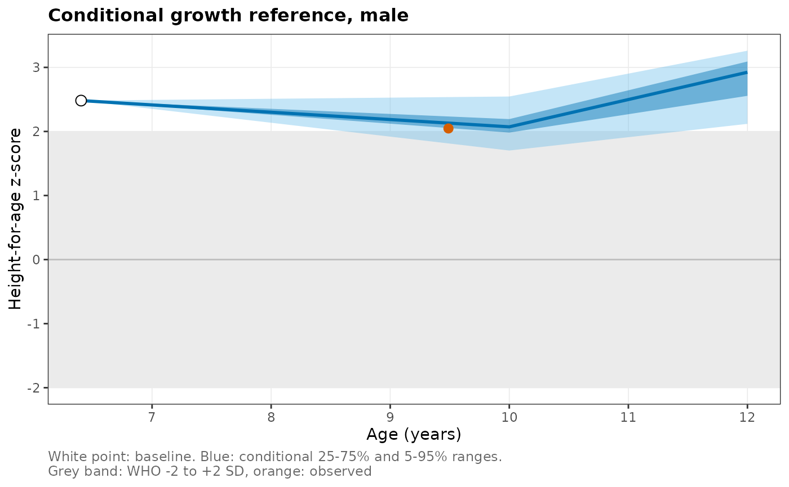
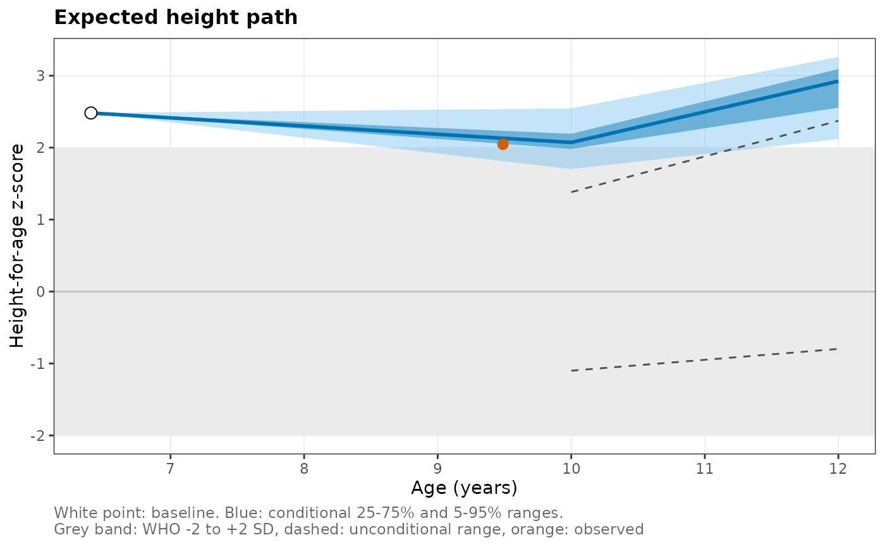

Shows where a child is expected to be at each target age given what is known about the child at baseline. The fan opens at the baseline measurement (a single point, since that value is known) and widens to the predicted 25th to 75th and 5th to 95th centile ranges at each target age. For comparison it shows the WHO -2 to +2 SD band, which ignores the child's history, and optionally the unconditional range of the cohort at the same ages. Later measurements of the child can be overlaid to see whether growth followed the expected course.
Usage
wgh_plot_fan(
object,
child,
targets = NULL,
observed = NULL,
outcome = "haz",
bands = c(0.05, 0.25),
show_who = TRUE,
show_unconditional = FALSE,
...
)Arguments
- object
A
wgh_condrefobject.- child
A one-row data frame with
sexand the baseline features used in the model (by defaultbaseline_age,baseline_hazandbaseline_baz), for example one row ofwgh_conditional_panel().- targets
Target ages to show (default all fitted target ages).
- observed
Optional data frame of the child's later measurements with
ageand the outcome z-score column (hazby default) ortarget.- outcome
Name of the outcome column in
observed.- bands
Outer and inner central ranges, as lower-tail probabilities (default 5 to 95 and 25 to 75).
- show_who
Show the WHO -2 to +2 SD band.
- show_unconditional
Show the cohort's unconditional range (dashed).
- ...
Display options (see
wgh_plot_options()).
Next steps
Use wgh_condref_centile() to turn an observed later value into a
conditional centile, and wgh_plot_condref_calibration() to check that
the predicted ranges have the coverage they claim.
Examples
# \donttest{
cp <- wgh_conditional_panel(growdat, targets = c(10, 12, 14))
cr <- wgh_condref(cp)
child <- cp[cp$target_nominal == 10, ][1, ]
later <- growdat[growdat$pid == child$id & growdat$age > 9, c("age", "haz")]
wgh_plot_fan(cr, child, observed = later)

wgh_plot_fan(cr, child, observed = later, show_unconditional = TRUE, title = "Expected height path")

# }